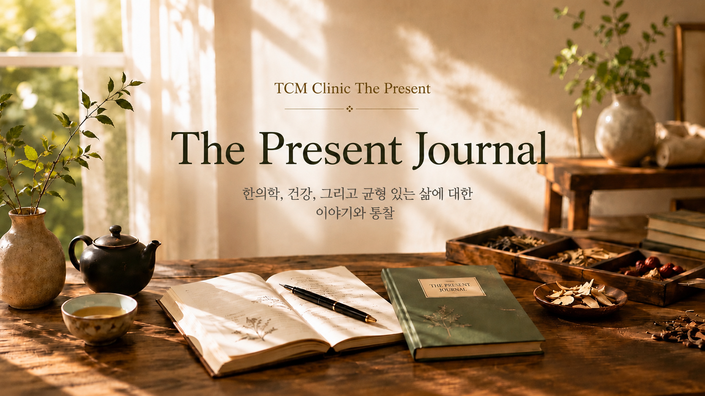

The Present Journal
The Present Journal is a place where we share health insights inspired by the wisdom of Traditional Chinese Medicine and our clinical experience. We hope to provide practical, reliable health information that supports your everyday well-being.

선물 저널
선물 저널은 전통 한의학의 지혜와 임상 경험을 바탕으로 다양한 건강 이야기를 나누는 공간입니다. 여러분의 일상에 작은 도움이 되는 건강 정보를 꾸준히 전해드리겠습니다.
Journal Entries 저널
Click any entry to read in full. 각 항목을 클릭하면 전체 내용을 확인하실 수 있습니다.
The longer I practice as a Traditional Chinese Medicine practitioner, the more often I find myself emphasizing one important message to my patients: the importance of stomach health.
Patients come to my clinic with a wide range of concerns — neck and back pain, skin conditions, fatigue, women’s health issues, and many other complaints. Yet, during consultation, I am often surprised to find that many of them also have poor stomach health.
Why does this happen?
One of the most common reasons is the habit of repeatedly eating only the foods we enjoy. Everyone has their favourite foods. The problem is not the foods themselves. The problem is eating them too often or relying on them almost exclusively.
Without a balanced diet, it is difficult to maintain a balanced body.
In Traditional Chinese Medicine, the digestive process is regarded as the source of Qi (vital energy) and Blood, which nourish and sustain the entire body. The food we eat provides the foundation for our body’s energy, growth, and daily function. In this sense, the stomach is the starting point of good health.
The encouraging news is that stomach health is something we can influence through the choices we make every day.
At every meal, while shopping at the supermarket, or when choosing from a restaurant menu, we have an opportunity to make decisions that support our stomach. For example, when digestion is weak, simply avoiding overeating and reducing foods that place unnecessary strain on the digestive system can make a significant difference.
When stomach health deteriorates over a long period, the effects are not limited to the stomach itself. Poor digestion may influence the intestinal environment, reduce the efficient digestion and absorption of nutrients, and eventually affect overall nutritional status. It may also contribute to conditions such as acid reflux and other oesophageal problems. Furthermore, persistent digestive discomfort can have a negative impact on quality of life and even mental well-being.
For this reason, I often tell my patients:
The stomach is where good health begins.
If you wish to live a healthier life, begin by choosing foods that are gentle on your stomach. Learn to eat according to your digestive capacity and practise moderation in both food choices and portion sizes.
Every meal is more than an opportunity to satisfy hunger — it is an opportunity to choose your health.
Today, before deciding what you would like to eat, take a moment to ask yourself a different question:
“What would my stomach like me to eat?”
That small decision may bring comfort today and help build a healthier tomorrow.
임상을 해나갈수록 환자들에게 가장 자주 당부하게 되는 것이 있습니다. 바로 위 건강의 중요성입니다.
목이나 허리 통증, 피부질환, 피로감, 여성질환 등 다양한 문제로 내원한 환자들을 진찰하다 보면, 의외로 많은 분들의 위가 건강하지 않은 상태인 경우를 자주 보게 됩니다.
왜 이런 일이 생길까요?
가장 큰 이유 중 하나는 자신이 좋아하는 음식만 반복해서 먹는 식습관입니다. 누구나 좋아하는 음식(Favourite Foods)이 있습니다. 문제는 좋아하는 음식 자체가 아닙니다. 그것을 너무 자주 먹거나, 그것만 먹으려는 습관이 문제입니다.
균형 잡힌 식사를 하지 않으면 균형 잡힌 몸을 만들기 어렵습니다.
한의학에서는 음식이 소화되는 과정을 통해 우리 몸의 기(氣)와 혈(血)이 생성된다고 봅니다. 우리가 섭취한 음식은 몸 전체에 영양을 공급하고 생명 활동을 유지하는 근본이 됩니다. 그런 의미에서 위는 건강의 출발점이라고 할 수 있습니다.
다행스러운 것은 위 건강은 우리가 매일 스스로 선택할 수 있는 영역 안에 있다는 점입니다.
하루 두세 번의 식사에서, 마트에서 장을 볼 때, 레스토랑에서 메뉴를 고를 때마다 우리는 위를 위한 선택을 할 수 있습니다. 예를 들어 소화 기능이 떨어져 있을 때는 과식을 피하고, 자신의 몸에 부담이 되는 음식은 줄이는 것만으로도 위는 훨씬 편안해질 수 있습니다.
위 건강이 오랫동안 나빠지면 단순히 위만의 문제로 끝나지 않을 수 있습니다. 소화 기능이 저하되면 장내 환경에도 영향을 줄 수 있고, 영양소의 소화와 흡수가 원활하지 않아 전신의 영양 상태에도 영향을 미칠 수 있습니다. 또한 역류성 식도염 같은 식도 질환이 동반되거나, 만성적인 소화 장애가 삶의 질과 정신 건강에 영향을 미치는 경우도 적지 않습니다.
그래서 저는 환자들에게 늘 말씀드립니다.
위는 건강의 시작입니다.
건강한 삶을 원한다면 먼저 위가 편안해하는 음식을 선택하십시오. 자신의 소화 능력에 맞는 음식과 적절한 식사량을 유지하는 습관을 들이십시오.
매일 우리 앞에 놓이는 식탁은 단순히 배를 채우는 자리가 아니라 건강을 선택하는 자리입니다.
오늘 식탁 앞에서 한 번만이라도 ‘내가 좋아하는 음식’보다 ‘내 위가 좋아하는 음식’을 먼저 생각해 보십시오.
그 작은 선택이 오늘의 편안함을 만들고, 건강한 내일로 이어질 것입니다.
Have questions about TCM or our service? We'd love to hear from you. 한의학이나 서비스에 대해 궁금하신 점이 있으신가요? 언제든지 연락 주세요.
Get in Touch문의하기